혼자 짠 상점 프로그램, 그리고 첫 결정
쇼피파이는 온라인으로 물건을 파는 사람에게 상점 프로그램을 빌려주고 돈을 받는 회사예요. 2025년 한 해 쇼피파이 상점들에서 팔린 금액은 3,784억 달러였어요. 그런데 2022년 말부터 3년 동안 직원은 3분의 1이 줄었고, 그사이 판매액은 두 배가 됐어요. 영상은 이 회사가 20년 동안 내린 결정 여섯 개를 순서대로 따라가요.
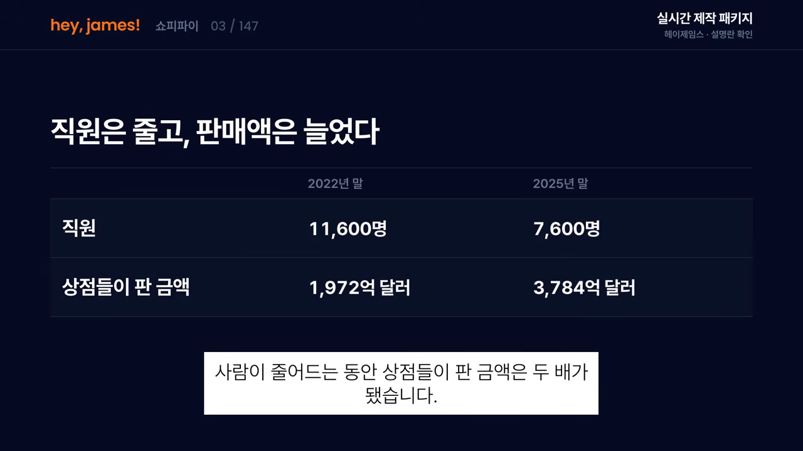
몸으로 배운 개발자
창업자 토비 뤼트케는 16살에 학교를 그만두고 독일에서 프로그래머 도제 과정에 들어갔어요. 회사에서 일하며 배우는 독일식 직업교육이에요. 그런데 첫해에는 코딩을 시키지 않았어요. 구내식당, 회계, 창고, 안내데스크를 석 달씩 돌고 나서야 개발팀에 배치됐어요. 본인은 직접 겪어 보지 않은 문제는 이해할 수 없었다며, 이게 옳은 배움이었다고 돌아봐요.
배경색 하나 때문에 시작한 회사
캐나다로 건너간 토비는 지겨운 금융 프로그램 일을 그만두고 스노보드를 온라인으로 팔기로 했어요. 문제는 쇼핑몰 프로그램이었어요. 당시 제품들을 다 써 봤는데, Yahoo Stores에서는 디자인을 바꾸려 해도 상단 배경색 하나 바꾸는 게 전부였어요.
그때 막 공개된 Ruby on Rails를 써 보고, 지겨웠던 건 프로그래밍이 아니라 재미없는 도구였다는 걸 깨달아요. 그리고 넉 달 동안 상점 프로그램을 직접 짰어요. 취업 비자가 없어서 캐나다에서 취직은 못 하지만 창업은 막혀 있지 않았다는 사정도 있었어요. 창업이 사실상 유일한 길이었던 셈이에요.
지금은 더 좋은 도구를 가졌다는 이유만으로 작은 사업자가 큰 기업과 경쟁하거나 앞설 수 있는 시대입니다.
— 2005년 상점을 연 날 토비가 Rails 커뮤니티에 쓴 글 (영상 02:42)
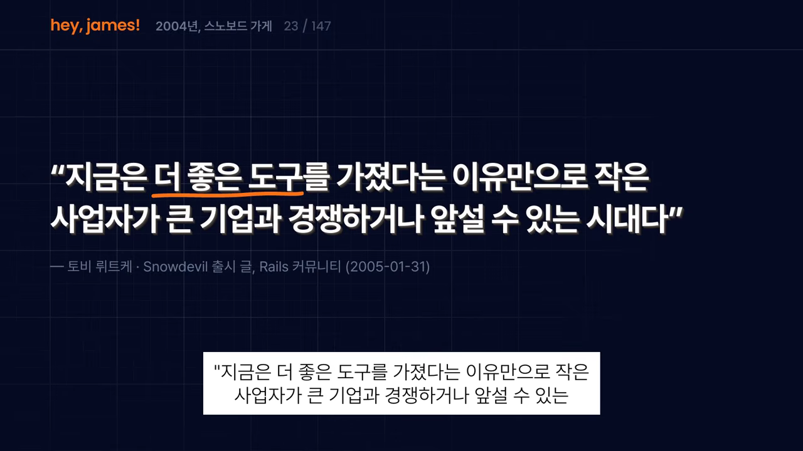
첫 번째 결정은 여기서 나와요. 스노보드를 파는 대신 상점 프로그램 자체를 파는 쪽으로 사업을 통째로 옮긴 거예요. 직접 만든 프로그램이 자기 필요를 너무 잘 채워 줬기 때문이에요. 그렇게 2006년에 내놓은 제품이 쇼피파이예요.
결정 2·3 — 수수료만 받고, 남이 벌게 두기
결정 2: 월 이용료 0원
2006년 출시 때 쇼피파이는 가입비도 월 이용료도 받지 않았어요. 물건이 팔리면 그 금액의 3%만 받았고, 한 달에 1만 달러를 넘게 팔면 그달 나머지는 2%로 내려 줬어요. 아직 하나도 못 판 사람에게 매달 돈을 내라고 하지 않겠다는 뜻이에요. 지금은 월 25달러부터 시작하는 구독 서비스예요.
여러분이 못 벌면 저희도 못 법니다.
— 2006년 쇼피파이 홈페이지 (영상 03:48)
원래 계획은 달랐어요. 출시 반년 전에는 요금제 두 개와 무료 체험을 예고했는데, 실제로는 요금제 없이 수수료만 받는 방식으로 나왔어요.
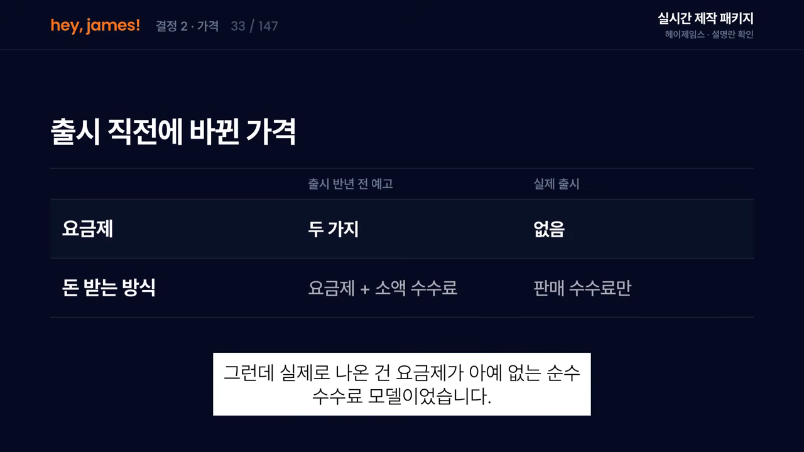
아끼는 습관은 재무에도 남아 있어요. 상장 전까지 투자로 받은 돈은 9천만 달러인데, 실제로 쓴 돈은 2,980만 달러였어요. 흑자가 나기까지 4년이 걸렸고, 그때 직원은 열세 명이었어요.
결정 3: 남이 돈을 벌게 두기
2009년에 연 앱스토어에는 처음에 앱이 아홉 개뿐이었어요. 2015년 상장할 때는 900개가 넘었고, 상인 75%가 앱을 하나 이상 쓰고 있었어요. 상장 서류에는 파트너를 눌러 이익을 가져가는 대신 파트너와 이익의 방향을 맞추겠다고, 그리고 장기 가치를 위해 단기 매출을 포기했다고 적혀 있어요.
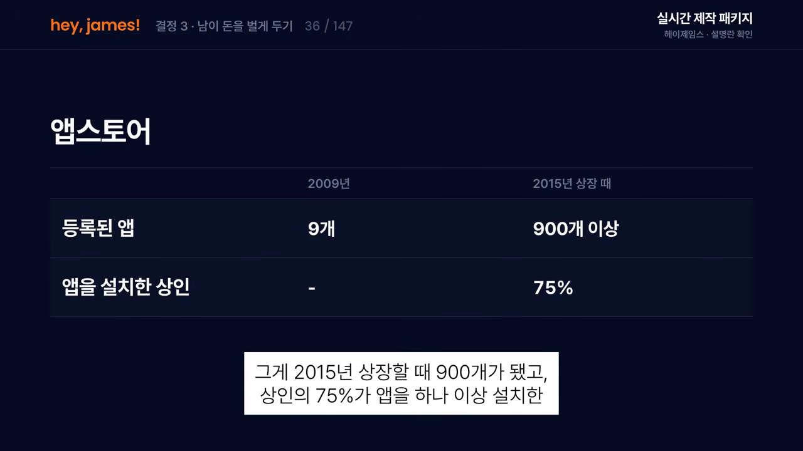
기술에서도 같은 판단이 보여요. 상인이 상점 디자인을 직접 고치게 하고 싶었지만, 남이 쓴 코드를 회사 서버에서 그대로 돌릴 수는 없었어요. 그래서 화면 꾸미기만 하는 언어 Liquid를 새로 만들었어요. 2006년부터 지금까지 쓰고 있어요.
쇼피파이를 만들다 필요해서 짠 코드를 떼어 오픈소스로 공개하는 것도 이 회사의 반복되는 습관이에요.
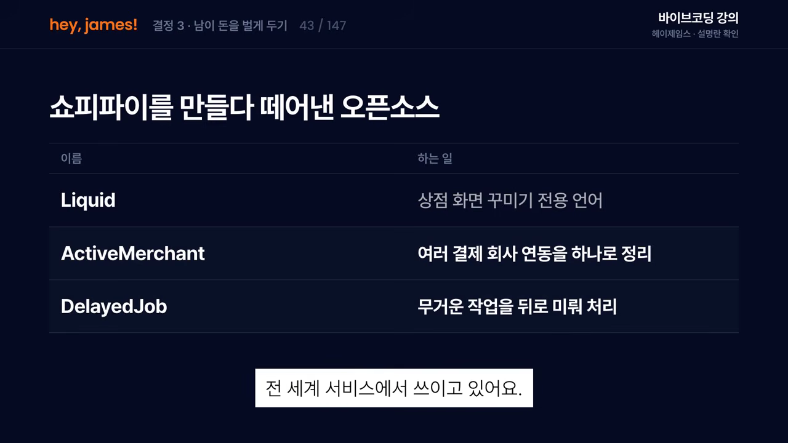
상인을 모은 방법도 광고가 아니었어요. 2010년에 팀 페리스와 함께 두 달 동안 가장 많이 판 사람이 이기는 창업 대회를 열었어요. 1회에만 새 사업체가 1,400개 가까이 생겼고 주문이 66,503건 나왔어요. 137번째 상점 주인이던 할리 핑켈스타인은 2010년에 회사에 합류해 2020년에 사장이 됐어요. 쓰던 사람이 만드는 쪽으로 넘어온 거예요.
결정 4 — 지분 14.6%로 회사를 쥐는 법
쇼피파이는 2015년 5월 21일 한 주 17달러에 상장했어요. 이때 회사 가치는 약 12억 6,500만 달러였어요. 그런데 창업자 토비의 지분은 14.6%뿐이었고, 가장 큰 주주는 30.3%를 가진 투자사 Bessemer였어요. 지분만 보면 창업자가 회사를 쥘 수 없는 구조예요.
주식을 두 종류로 나누기
그래서 상장 때 주식을 두 종류로 나눴어요. 시장에서 거래되는 주식은 1주에 1표, 창업자와 기존 투자자 주식은 1주에 10표예요. 시장에 풀린 지분은 10.3%였지만, 표로 따지면 1.1%밖에 안 됐어요.
창업자 주식이라는 장치
2022년에는 한 발 더 나갔어요. '창업자 주식'을 새로 만들어 토비에게 주자는 안건을 주주총회에 올렸어요. 이 주식은 배당도 없고 팔 수도 없지만, 창업자 쪽 의결권이 40% 아래로 내려가지 않게 표를 자동으로 채워 줘요. 회사가 새 주식을 아무리 찍어도 창업자의 표는 줄지 않는다는 뜻이에요. 2025년 말 토비의 지분은 6% 정도인데 의결권은 40.09%예요.
이 안건은 아슬아슬하게 통과됐어요. 전체 주주 기준 찬성은 72.35%였지만, 창업자와 가족을 뺀 주주만 세면 53.68% 대 46.32%였어요. 같은 총회에서 주식을 10분의 1로 쪼개는 안건은 99.64%가 찬성했어요. 주가를 싸 보이게 하는 데는 모두 동의했지만, 창업자에게 영구 의결권을 주는 데는 반반으로 갈린 거예요.
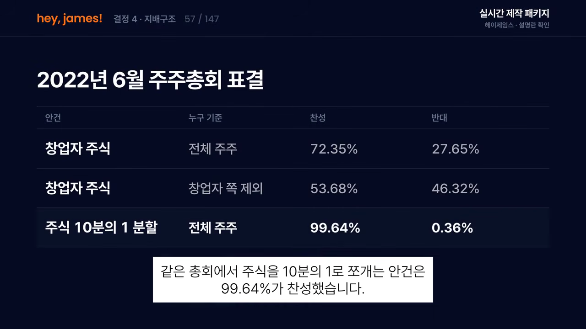
주가와 실적, 무엇부터 봐야 할까요?
주가는 크게 오르내렸어요
상장 때 12억 달러대였던 회사 가치는 코로나로 온라인 쇼핑이 폭증하던 2021년 11월 2,130억 달러까지 올랐어요. 그리고 11개월 뒤 330억 달러로, 고점 대비 85% 가까이 빠졌어요. 그 고점을 다시 넘은 건 2025년 10월 29일, 3년 11개월 뒤였어요. 2026년 9월 15일 종가 기준 시가총액은 1,670억 달러예요.
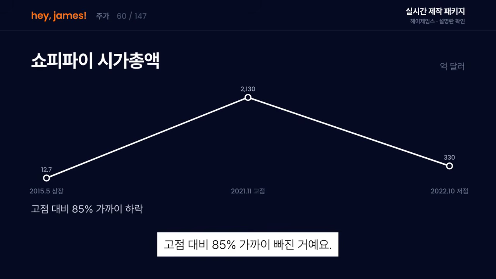
순이익의 98%가 본업 밖의 돈
주가와 별개로, 회사가 실제로 번 돈은 따로 봐야 해요. 2021년 순이익은 29억 1,470만 달러였는데, 그중 영업이익은 2억 6,860만 달러뿐이었어요. 나머지 28억 5,980만 달러는 쇼피파이가 들고 있던 다른 회사 주식의 평가이익이었어요. 팔지도 않은 주식이 올라서 생긴 숫자가 순이익의 98%였던 거예요.
2022년은 정반대였어요. 순손실 34억 6천만 달러 중 영업손실은 8억 2,200만 달러였고, 나머지는 같은 주식이 떨어져 생긴 손실이었어요. 두 해 사이 63억 7천만 달러가 움직였는데, 그중 91%가 투자해 둔 두 회사의 주가 등락이었어요.
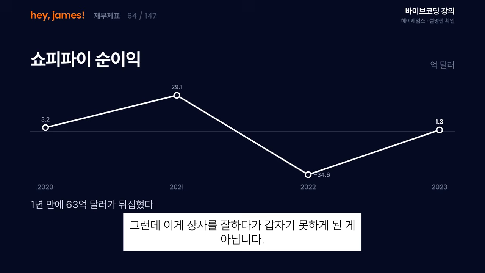
2023년은 더 헷갈려요. 영업손실이 14억 1,800만 달러인데 순이익은 1억 3,200만 달러 흑자로 찍혀요. 그래서 손익계산서는 맨 아래 순이익이 아니라 영업이익 줄부터 봐야 해요. 영업이익이 본업으로 번 돈이고, 순이익에는 본업과 상관없는 게 섞여 들어오거든요.
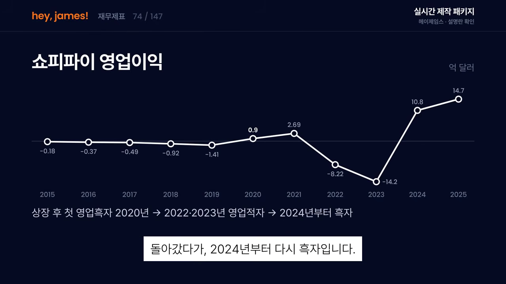
영업이익 기준으로 쇼피파이는 상장 뒤 2020년에 처음 흑자를 냈고, 2022~2023년 다시 적자였다가, 2024년부터 흑자예요. 2025년은 영업이익 14억 6,800만 달러, 순이익 12억 3,100만 달러로 처음으로 순이익이 영업이익보다 작았어요. 영상은 이걸 회사 역사상 가장 깨끗한 실적이라고 불러요.
구독 회사가 아니라 결제 회사
쇼피파이는 구독 서비스로 알려져 있지만, 2025년 구독 매출은 전체의 24%예요. 2013년에는 76%였어요. 나머지는 결제, 배송 라벨, 대출처럼 상인이 팔 때마다 붙는 돈이에요. 쇼피파이 자체 결제로 처리된 비중은 2018년 40%에서 2026년 2분기 68%가 됐어요.
그래서 매출은 상인 수보다 상인이 얼마나 파느냐에 붙어 있어요. 2006년 3% 수수료 때의 '같이 벌고 같이 못 버는' 구조가 이어진 거예요. 다만 남는 비율은 내려갔어요. 100만 원을 벌면 2017년엔 56만 원이 남았는데 2025년엔 48만 원이에요.
결정 5 — 물류를 직접 하려다 접기
2022년 7월 쇼피파이는 배송 회사 Deliverr를 19억 7,200만 달러, 우리 돈 약 2조 7천억 원에 샀어요. 거의 전액 현금이었어요. 그런데 같은 달 직원 10%를 내보냈어요.
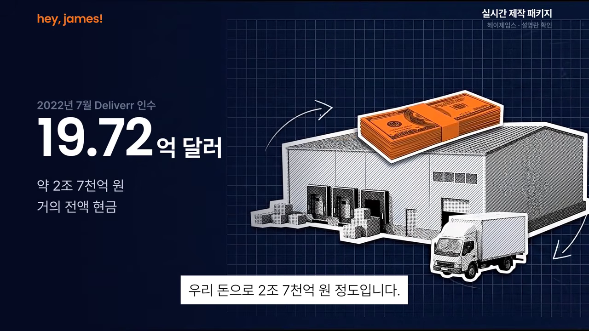
이제 그 베팅이 실패했다는 게 분명해졌다, 이 베팅은 내가 내린 결정이었고 내가 틀렸다.
— 토비 뤼트케, 2022년 7월 전 직원 메일 (영상 12:07)
토비는 온라인 쇼핑 비중이 5~10년 앞당겨질 거라고 베팅했다가, 그게 틀렸다고 메일에 직접 썼어요. 그리고 11개월 뒤 물류 사업을 통째로 정리했어요.
회사를 살 때는 장부상 자산 값보다 웃돈을 얹어 줘요. 이 웃돈을 영업권이라고 하는데, Deliverr에 얹은 14억 3,800만 달러를 전부 손실로 적었어요. 산 지 1년도 안 된 회사의 값을 0으로 적은 거예요. 사업을 넘기고 받은 현금도 0원이었어요.
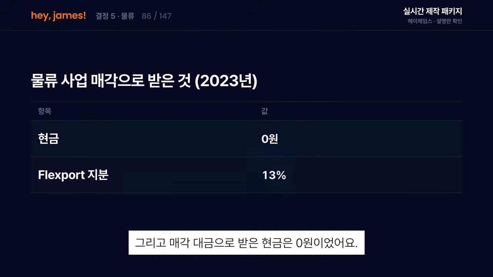
같은 날 직원 20%를 더 내보냈어요. 그 메일에서 회사의 본 줄기를 '메인 퀘스트', 물류를 '사이드 퀘스트'라고 불렀는데, 나가는 직원들이 곁가지 취급을 받았다고 느꼈다는 보도도 나왔어요.
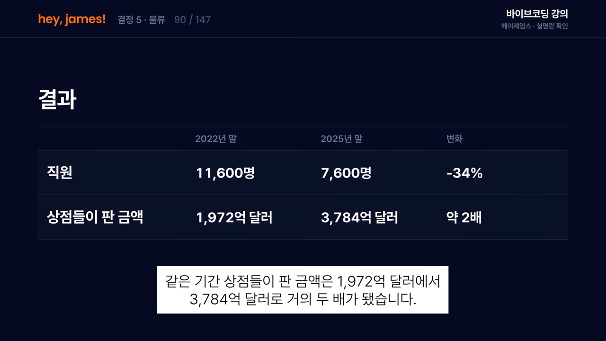
결정 6 — 도구를 바꾸지 않고 고치기, 그리고 AI
20년째 같은 도구, 한 덩어리 시스템
사람을 줄이면서 장사를 두 배로 키운 비결로, 영상은 도구를 다루는 방식을 꼽아요. 쇼피파이의 핵심 시스템은 2026년에도 2004년에 쓰기 시작한 Ruby on Rails예요. 이 시스템은 Ruby 코드 280만 줄이 하나의 프로그램으로 묶인 모놀리스예요. 엔지니어 3,100명 중 2,200명이 이 한 덩어리를 같이 고치고, 하루 40번씩 실제 서비스에 올려요.
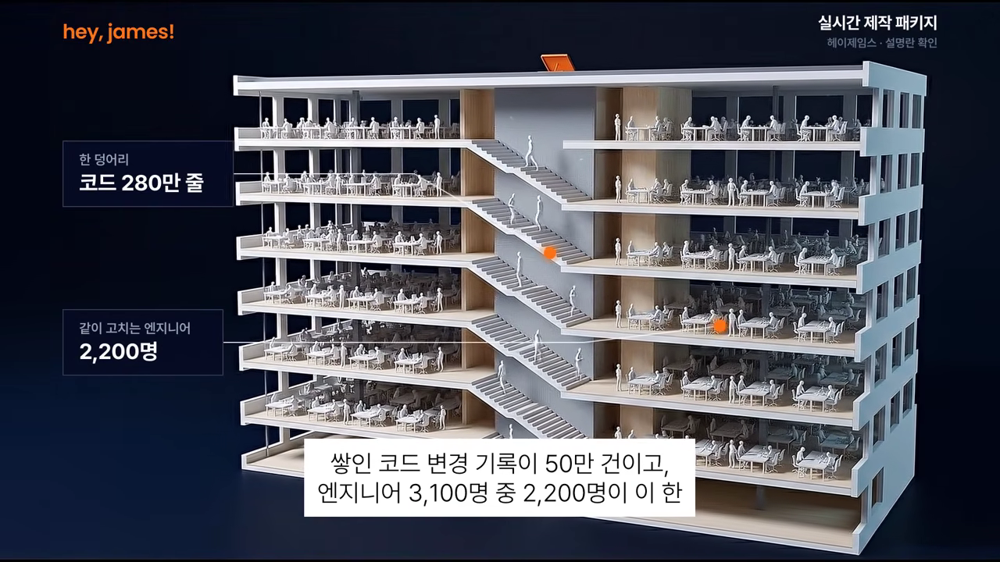
가장 바쁜 날은 블랙프라이데이예요. 2025년엔 나흘 동안 146억 달러어치가 팔렸어요.
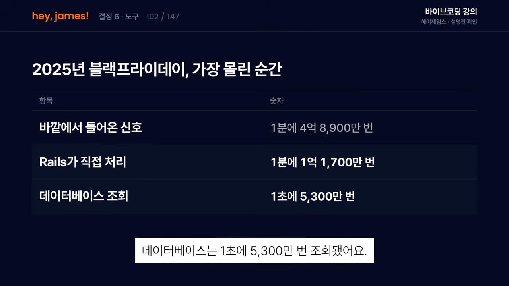
보통 이 정도 규모면 시스템을 잘게 쪼개요. 쇼피파이는 쪼개지 않고, 한 덩어리 안을 스물네 개쯤의 구역으로 나눈 뒤 구역끼리 함부로 넘나들지 못하게 막는 도구를 만들었어요. 2024년에는 그 도구를 돌아보는 글에서 규칙 하나가 실패였다고 인정하고 없앴어요.
2026년에는 재고를 잠깐 잡아 두는 기능을 빠른 저장소 Redis에서 원래 쓰던 데이터베이스로 되돌렸어요. 느린 원인이 다른 데 있었기 때문이에요. 도구를 늘리지 않고 줄여서 푼 거예요.
도구를 바꾸지 않고 고치기
쓰는 도구가 느리면 보통은 다른 도구로 갈아타요. 쇼피파이는 도구 자체를 고쳤어요. Ruby를 빠르게 돌리는 부품을 직접 만들어 Ruby 본체에 넣었고, Ruby 3.4 기준으로 기존 방식보다 약 92% 빨라요. Rails를 만든 사람은 2024년에 이사회에 들어왔고, 2026년 3월에는 CEO 토비가 직접 Liquid 처리 속도를 53% 높이는 코드를 올렸어요.
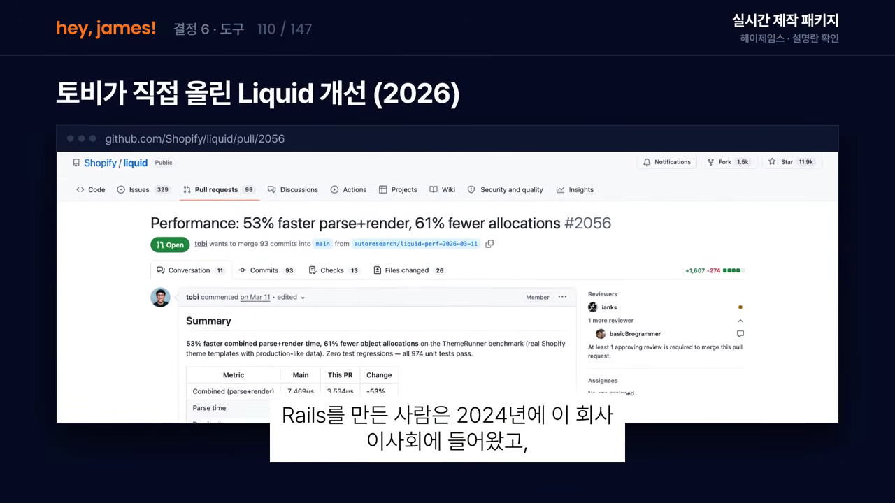
마지막 결정: AI를 기본값으로
2025년 4월 토비는 사내 메모를 썼고, 밖으로 샐 조짐이 보이자 X에 전문을 직접 올렸어요. 첫 문장은 AI를 반사적으로 쓰는 게 이제 기본 기대치라는 내용이었어요. AI 활용 능력을 인사 평가에 넣고, 본인과 임원에게도 똑같이 적용한다고 했어요.
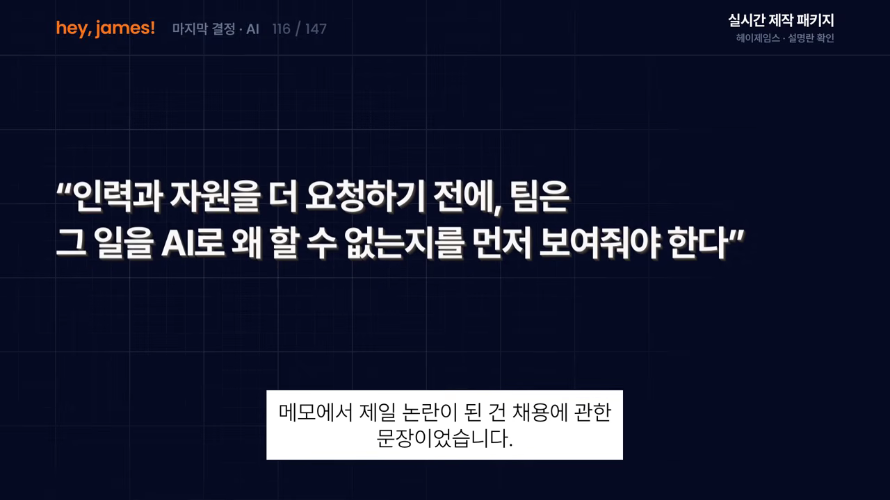
말로 끝나지 않았어요. AI 코딩 도구 사용료에 상한을 두지 않았고, 엔지니어링 인턴을 2024년 25명에서 2025년 1,000명으로 늘렸어요.
그리고 2026년 9월 10일, 쇼피파이는 모바일 앱을 iOS와 안드로이드 각각의 네이티브 방식으로 다시 만든다고 발표했어요. 2020년부터는 React Native로 한 번 만들어 두 군데에 쓰고 있었어요. 두 번 만드는 비용이 비싸서 고른 방식인데, AI가 그 비용을 없앴다는 거예요. 안드로이드 기능을 만들 때 iOS 버전을 참고로 주면 AI가 만들어 준대요.
LLM이 2020년 결정의 핵심 전제 하나를 바꿔놨기 때문에, 우리는 모바일 스택을 처음부터 다시 검토했다.
— Shopify Engineering 블로그, 2026년 9월 (영상 17:45)
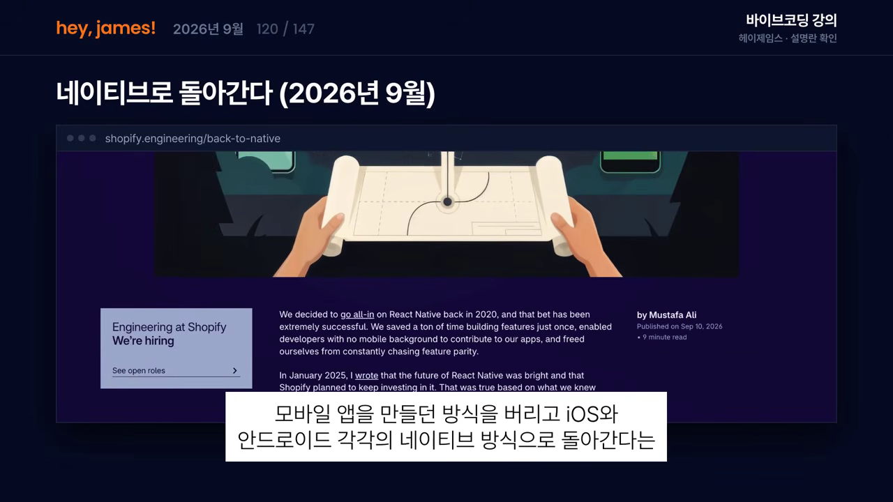
상인 쪽에서 본 쇼피파이와 네 가지 교훈
AI가 다 되는 건 아니에요
2025년 9월 쇼피파이는 OpenAI와 함께 ChatGPT 안에서 바로 결제하는 기능을 내놨어요. 그런데 2026년 3월 OpenAI가 이 기능을 접었어요. 실제로 연결한 상점은 열두 곳 남짓이었고, 사람들은 ChatGPT에서 구경만 하고 구매는 원래 사이트에서 했거든요.
AI가 데려온 주문의 값은 누가 낼까요? 2026년 초 상인들에게 안내된 AI 채널 추가 수수료를 보면 차이가 커요.
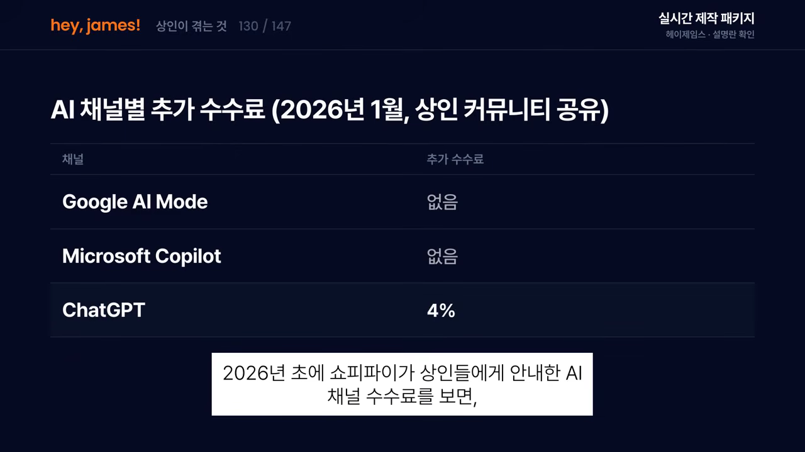
남의 플랫폼 위에 가게를 연다는 것
쇼피파이 상인들은 결제 화면 코드를 직접 고쳐 쓸 수 있었는데, 2025년과 2026년 두 번에 걸쳐 막혔어요. 이제는 쇼피파이가 정해 준 틀 안에서만 고칠 수 있어요. 이런 변경이 몇 달에 한 번씩 오고, 그때마다 상인과 앱 개발사는 쓰던 걸 다시 만들어야 해요.
한국 상인에게는 하나가 더 있어요. 쇼피파이 자체 결제가 되는 나라에 일본, 싱가포르, 홍콩, 아랍에미리트는 있는데 한국은 없어요. 그래서 한국 상점은 국내 결제 대행사 수수료에 쇼피파이 거래 수수료를 따로 내요. 전환율을 올려 주는 간편결제 Shop Pay도 못 써요.
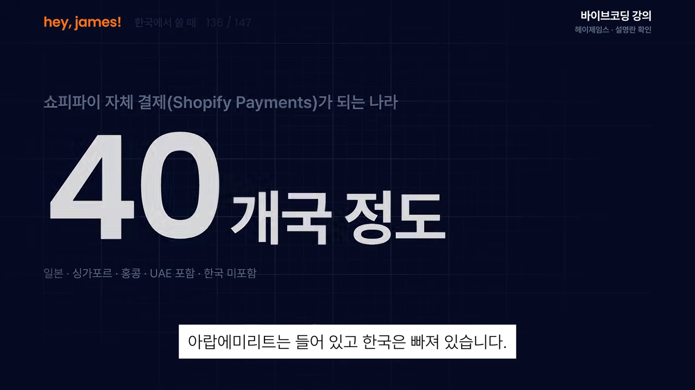
20년의 결정에서 가져갈 네 가지
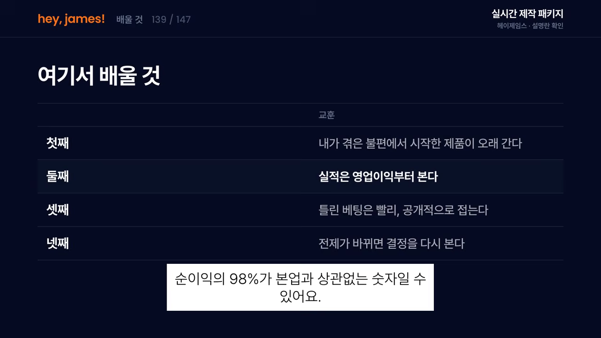
| 교훈 | 쇼피파이에서 나온 근거 |
|---|---|
| 내가 겪은 불편에서 시작한 제품이 오래 가요 | 배경색 하나밖에 못 바꾸는 프로그램에 질린 사람이 만들었고, 첫 기능이 '디자인을 전부 바꿀 수 있게'였어요 |
| 실적은 영업이익부터 봐요 | 2021년 순이익의 98%가 본업과 상관없는 주식 평가이익이었어요 |
| 틀린 베팅은 빨리, 공개적으로 접어요 | 2조 7천억 원짜리 인수를 11개월 만에 0으로 적고, 창업자가 '내가 틀렸다'고 썼어요 |
| 전제가 바뀌면 옛 결정도 다시 봐요 | '두 번 만드는 건 비싸다'는 전제가 사라지자 React Native를 버렸어요 |
둘째 교훈은 내 서비스에도 그대로 써요. 이번 달 들어온 돈이 본업에서 나온 건지 일회성인지 나눠 봐야 다음 달 계획을 세울 수 있어요. 넷째 교훈은 질문으로 바꿔 볼 수 있어요. 지금 쓰는 방식은 언제 정했고, 그때 맞다고 본 이유가 지금도 그대로인가요?